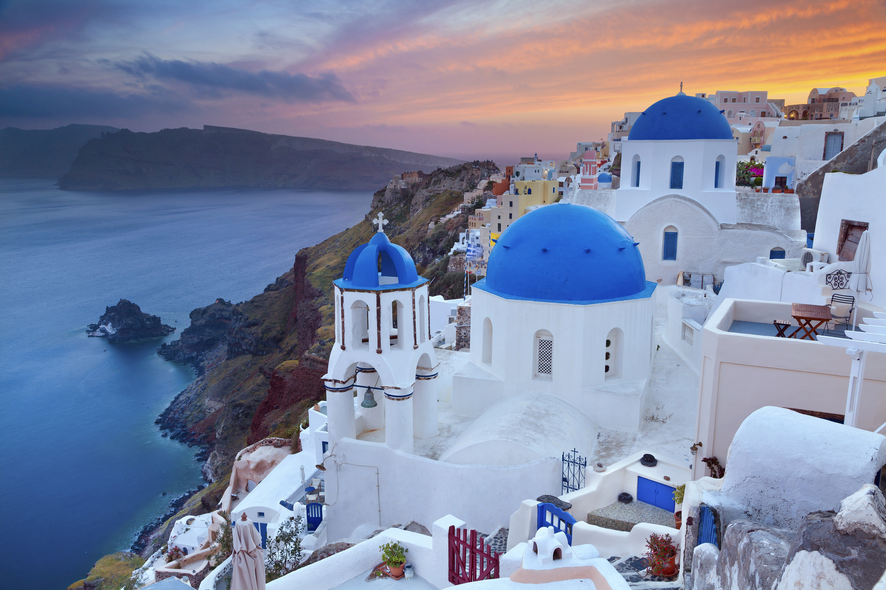

Explore the World
Eiffel Tower, Paris - The iconic symbol of France, attracting millions of
visitors every year.
Beaches, Maldives - Known for its turquoise waters, coral reefs, and
luxurious resorts.
Ubud, Bali - Famous for its rice terraces, yoga retreats, and cultural
heritage.

Colosseum, Rome - Ancient amphitheater and a symbol of the Roman Empire's
power.
Shibuya Crossing, Tokyo - One of the busiest pedestrian crossings in the
world.

Times Square, New York - Famous for its bright lights, Broadway theaters, and
billboards.
Opera House, Sydney - A world-renowned architectural masterpiece and cultural
icon of Australia.
Pyramids of Giza, Cairo - Ancient wonders and tombs of Pharaohs that have
stood the test of time.

Table Mountain, Cape Town - A flat-topped mountain offering stunning views of
the city and ocean.

Big Ben, London - The iconic clock tower in the heart of London, often seen
as a symbol of British heritage.

Red Square, Moscow - A historical site that has been the heart of Russia for
centuries.

Sagrada Familia, Barcelona - A unique basilica designed by architect Antoni
Gaudí.
Burj Khalifa, Dubai - The world's tallest building, offering spectacular
views of the city.

Canals, Amsterdam - Famous for its scenic canals and charming bike-friendly
streets.

Gondola Rides, Venice - A romantic and historic way to explore the canals of
Venice.

Berlin Wall, Berlin - A symbol of the division of East and West Germany
during the Cold War.

Blue Mosque, Istanbul - A stunning example of Ottoman architecture and
Islamic art.

Gyeongbokgung Palace, Seoul - A beautiful historical palace in the heart of
Seoul.
Great Wall, Beijing - A marvel of engineering stretching across thousands of
miles.

White Houses, Santorini - Famous for its white-washed buildings and beautiful
sunsets.

Old Town, Havana - A UNESCO World Heritage site with colorful streets and
vintage cars.

Gateway of India, Mumbai - A monumental archway that commemorates the visit
of King George V.

Red Fort, Delhi - A symbol of India's rich Mughal history and architecture.

Fushimi Inari Shrine, Kyoto - Famous for its iconic red torii gates leading
to the shrine.

Hollywood Sign, Los Angeles - The iconic symbol of the American film
industry.
Christ the Redeemer, Rio - The towering statue overlooking Rio de Janeiro.

CN Tower, Toronto - One of the tallest freestanding structures in the world.
Marina Bay Sands, Singapore - An iconic hotel and resort with an infinity
pool on the rooftop.
Tram, Lisbon - Famous for its historic yellow trams that navigate the city's
hills.
Charles Bridge, Prague - A historic stone bridge adorned with statues of
saints.
Schönbrunn Palace, Vienna - A former imperial summer residence with stunning
gardens.
Acropolis, Athens - A historic citadel featuring ancient ruins like the
Parthenon.
Oslo Opera House, Oslo - A modern architectural masterpiece with views of the
harbor.
Helsinki Cathedral, Helsinki - A neoclassical landmark with a prominent green
dome.

Gamla Stan, Stockholm - The charming old town with narrow streets and
medieval buildings.

Nyhavn, Copenhagen - A picturesque harbor with colorful buildings and boats.